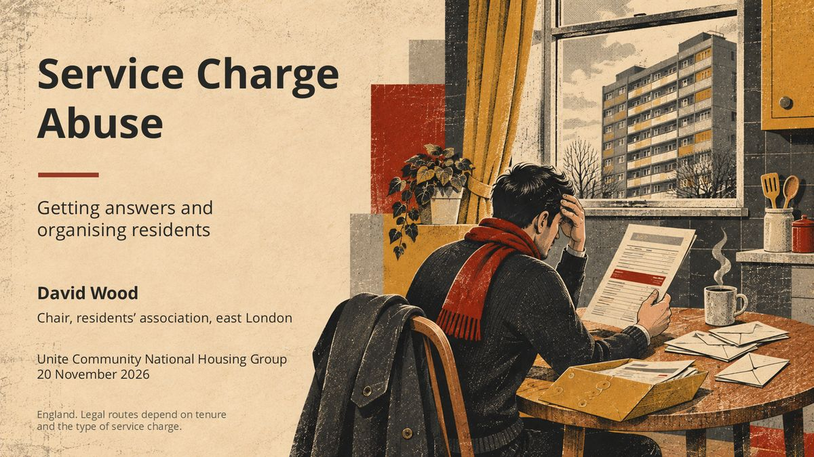

Service Charge Abuse: Getting Answers and Organising Residents

The text and slides of a talk I gave to Unite Community's National Housing Group on 20 November 2026. It covers the prosecution of my landlord, the three routes open to a resident with a service charge problem, what is about to change in the law, and why the first step is to knock on a neighbour's door.
In this article
This is the script of the talk, tidied for reading, with each slide shown where it appeared. The illustrations are AI-generated and conceptual. They do not show real people or events.
The prosecution
Good morning everyone, and thank you for having me.
My name is David Wood. I chair a residents' association in east London. Most of the residents in my association are shared owners, which means they own part of their flat and rent the rest. My landlord is Peabody, one of the biggest housing associations in the country.
You know, I used to have hobbies. Then I became chair of a residents' association.
One note before I start. Everything I say about the law today is about England, and which parts apply to you depends on what kind of resident you are and what kind of charge you pay. I will take the specifics in questions.
In January 2026 I asked my landlord a simple question. What have you spent our service charge on?
I was not asking for a favour. The law says that if a resident asks in writing, the landlord must send back a written summary of the costs, and it sets a deadline for the response. Peabody missed the deadline.
I had been asking this same question for years, but this time I was determined not to be ignored.
So I took them to court. Not the small claims court. Criminal court. Because failing to answer that question, without a reasonable excuse, is a crime. It has been since 1985. Most landlords seem to have forgotten that. In fairness, so had the court.
I am not a lawyer. I filled in the forms myself. And the first time I applied, the court said no. It told me housing associations were exempt. Which they are. In Wales.
![Slide 2, The right to bring a private prosecution. Section 6(1) of the Prosecution of Offences Act 1985 preserves an individual's right to institute and conduct private criminal prosecutions: 'nothing in this Part shall preclude any person from instituting any criminal proceedings'. The Director of Public Prosecutions may take over under section 6(2). The offence is Landlord and Tenant Act 1985, section 25(1): failure without reasonable excuse to fulfil the section 21 information duty. Peabody Trust pleaded guilty at Thames Magistrates' Court on 11 August 2026. Fine of £1,000, £400 victim surcharge, no order for costs. An illustration shows a figure carrying a folder up the steps of a court building.](../images/service-charge-abuse-slide-02.jpg)
I pointed out, as politely as I could manage, that my flat and the court I applied to were in England, and the court agreed to hear me.
At that hearing Peabody did not send a lawyer. It sent a regional service charge manager. And on 11 August Peabody Trust pleaded guilty. It was fined one thousand pounds.
I need to be precise. That conviction is for failing to provide the information, and nothing else. It didn't require them to provide the information, just fined them for not doing so. My wider dispute about the charges themselves is a separate matter and it is still going, so I will leave it there.
But it should not take a criminal prosecution to get a landlord to do its paperwork.
![Slide 3, Service charges and inflation, 2019 to 2024. Estate charges rose 41 per cent; inflation rose 23 per cent. A table of mean costs per estate shows the overall estate average rising from £331,729 in 2019 to £467,138 in 2024, with the largest category increases in insurance (92 per cent, £49,649 to £95,259), utilities (73 per cent), professional fees (69 per cent), health and safety (40 per cent), general expenses (39 per cent), on-site staff (37 per cent), repairs and maintenance (36 per cent), reserve contributions (34 per cent) and management fees (21 per cent). Source: The Property Institute Service Charge Index, April 2024; 108 estates, 13,754 homes, England and Wales. These are mean costs or budgets per estate. Category samples vary, so rows are not additive, and individual bills vary.](../images/service-charge-abuse-slide-03.jpg)
Looking at the attendance today, I know I am not in a unique position. The Property Institute looked at estate service charges between 2019 and 2024 and found that they had risen nearly twice as fast as inflation.
When charges rise that fast, you are entitled to know three things. What am I paying for? Did I actually get it? And is the price fair?
Before I go on, put the answer to this in the chat: has anyone here ever had a straight answer about their service charge?
Three doors
There are three doors a resident can knock on, and each one leads somewhere different.
![Slide 4, Door one: your right to information. Landlord and Tenant Act 1985, current rights in England as at November 2026. Section 21, get the cost summary: write for the last accounting year's cost summary, or the past 12 months if accounts are not annual. Costs shared by more than four homes normally require accountant certification. The deadline is one month from the request or six months after the accounting period ends, whichever is later. Section 22, inspect the supporting records: write within six months of receiving the summary, and inspect accounts, receipts and documents, with copies or extracts. Access starts within one month and stays available for two. There is no direct inspection fee, and reasonable copying charges are allowed. Section 23, follow costs up the landlord chain: for section 21, the landlord seeks missing information up the chain and the superior landlord replies in reasonable time, with extra time allowed where reasonable. For section 22, the landlord promptly gives the superior landlord's name and address, and the inspection duty then applies to that superior landlord.](../images/service-charge-abuse-slide-04.jpg)
Door one. "What am I paying for?" is your right to information.
You write to your landlord and ask for a summary of the service charge costs. We call this a Section 21 request, not to be confused with the old section 21 eviction notice. That is a different act.
Once you have the summary, you can ask to see what sits behind it: the accounts, the invoices, the receipts. This is Section 22.
If your landlord says that they don't have the information, that is not, by itself, an excuse. Section 23 requires any superior landlord to also reply.
Failing to respond to this request is a criminal offence, which your local council has the power to prosecute. I asked my council to prosecute in 2025, and I didn't even get a response.
I asked them again in 2026, expecting and receiving the same stony silence. So I launched my private prosecution.
If you want to try this yourself, there are links to letter templates at the end.
![Slide 5, Door two: the Housing Ombudsman Service. A free, independent and impartial service, established by law, investigating complaints about member landlords. Who: tenants, shared owners and leaseholders of member landlords, including councils and housing associations; some private landlords join voluntarily. Examines: service failures, repairs, information requests and the way the landlord handled your complaint. Can order: repairs, apologies, compensation and changes to policies or procedures following a finding. Access: normally you complete the landlord's two-stage complaints process, but it can help if the landlord fails to respond. It cannot decide whether the amount of your service charge is reasonable.](../images/service-charge-abuse-slide-05.jpg)
Door two. "Why is the service so poor, and why will nobody answer me?" is the Housing Ombudsman Service.
That goes through your landlord's complaints process first. Some of you may have done this.
The landlord's complaints process has two stages. At stage one, they tell you nothing is wrong. At stage two, someone more senior tells you nothing is wrong. After that, you can take it to the Housing Ombudsman. The Ombudsman looks at how the landlord behaved. Did they do the repair? Did they answer you? What it cannot do is decide whether the amount on your bill is reasonable.
Which takes us to the last door.
![Slide 6, Door three: the First-tier Tribunal, Property Chamber (Residential Property), England. An independent tribunal that hears both sides and decides disputes within its legal jurisdiction. Who: tenants, shared owners, leaseholders and landlords in qualifying disputes over variable service charges. Examines: does the agreement permit the charge, were costs reasonably incurred, was the standard reasonable. Decides: whether a charge is payable, the amount, who pays whom, and when and how it must be paid. Process: written application and evidence, a decision on the papers or at a hearing, and you may represent yourself. The takeaway: a legal determination of what you owe. Current fees: £114 for an application and £227 for a hearing if required, with help with fees available. These fees are not a cap on the overall cost of proceedings.](../images/service-charge-abuse-slide-06.jpg)
Door three. "Do I actually owe this?" is for the First-tier Tribunal.
The First-tier Tribunal works like a specialist housing court. For variable service charges that go up and down with what the landlord spends, it can decide whether the costs were reasonably incurred, whether the work was done to a reasonable standard, and how much you really have to pay.
These are the three doors that the Government says protect your rights. If you haven't heard about them, I am not surprised. Your housing association would prefer they didn't exist.
Not every door is open to every resident. It depends on your tenure and on whether your charge is fixed or variable.
What is changing
![Slide 7, What changes, and when? Leasehold and Freehold Reform Act 2024, England, scheduled rollout. From 1 April 2027: wider rights to information about charges, insurance and building management; sections 22 and 23 replaced, with their criminal enforcement removed; a new section 25A tribunal route with compliance orders and damages of up to £5,000, which is untested; and litigation costs rules under which landlords generally need permission to pass on legal costs and residents can seek their own costs, with exceptions and transition rules. From 1 November 2027: standardised demands, accounts and annual reports for non-social landlords, and insurance disclosures, permitted insurance payments and administration charge schedules begin. From 1 November 2028: standardised demands, accounts and annual reports extend to social landlords, including councils and housing associations. Section 21 and its criminal enforcement remain until November 2027 for non-social landlords and November 2028 for social landlords. The reforms cover more than service charges, with separate commencement dates, some already in force, and some implementing detail still needs approval.](../images/service-charge-abuse-slide-07.jpg)
Now, the law is about to change. There is good news, and there is a catch.
The good news first. From 1 April 2027, and phased in through 2027 and 2028, residents are being promised more and wider rights to ask for information about how the building is managed and maintained as well as about the charges.
Clearer, standardised bills, accounts and annual reports. More openness about insurance costs and administration charges. And changes on legal costs: limits on landlords passing their legal bills on to you, and a new way for residents to claim their own costs back.
Social landlords get longer to bring in some of it, and some of the detail still has to go through Parliament. But the direction is promising.
What didn't make the press release is that the criminal offence I used is being abolished.
From 1 April 2027, the right to inspect the receipts is replaced by new information rights, without the threat of the magistrates' court attached to it. The offence I actually used, for failing to provide the summary, goes later: in November 2027 for most landlords, and in November 2028 for housing associations.
Under the new regime, if your landlord ignores you, you apply to the tribunal. The tribunal can order the landlord to comply, and it can award you damages of up to five thousand pounds.
This is a new scheme, and it is untested. Which is a polite way of saying the government would like you to test it. We do not know how long it will take, how the tribunal will treat it, or whether landlords will take it seriously.
Under the old scheme, the penalty was an embarrassing criminal conviction, and one less team lunch.
The new scheme offers compensation. That could be the motivation you need for the neighbour who thinks nothing will ever change. If every flat applies, a lost team lunch becomes a department crisis.
The rights I used for my prosecution are still in place today, so use them while you can. The new rights will also need someone willing and able to enforce them.
Why organising matters more now

Which brings me to the people attending this call.
I did the prosecution with the help and support of my residents' association. I do not recommend doing it alone.
Landlords love to play divide and conquer. They don't expect neighbours to talk to each other. I live in London, and the stereotype is real, but the sharing of information between residents has made all the difference.
Evidence gathered from the whole building tells a different story than the evidence of one person. Before we organised, people were genuinely convinced they were the only person in the building with concerns.
Also, complaints. Multiple households making the same complaint is more difficult to ignore than one whiny leaseholder.
And lastly, the work itself. Someone keeps the spreadsheet. Someone chases the replies. Someone writes the letters. Nobody does all of it, because the person who does all of it lasts about six months. I say that as the person who does too much of it.
If you do not have an association yet, start small. A few neighbours and one problem you share. One meeting, and one clear demand that you could actually win.
You do not need your landlord's permission to start. You do not have to organise using their rules and infrastructure. We call ourselves a residents' association though I suspect Peabody has another name for us. Formal recognition brings extra rights, and I can explain those in questions, but organising comes first.
A WhatsApp group is a useful start.
Pressure outside the legal routes

I have talked mostly about the law, because that is what I know. Many of you know far more than I do about the other kind of pressure. Open letters and petitions. Going to your MP, your councillors, the landlord's board. SHAC, the Social Housing Action Campaign, publishes good guides on all of it.
What I would add is this. Those tactics hit harder when they carry evidence. A petition says we are unhappy. A petition with the landlord's own figures attached says we are right.
So I do not see this as a choice between the legal route and the campaigning route. The law gets you the facts. The campaign makes them impossible to ignore.
Close

Let me finish where I started.
The right I used still exists today. Today it still carries a criminal penalty. That will not last. The replacement is untested, and we will need to see how it works in practice.
I would not suggest you start your campaign with a full-blown legal prosecution.
This week, knock on one neighbour's door. Compare your bills. Find one thing on them that neither of you can explain. Then ask your landlord about it, together, in writing.
That is how every residents' association I know of began.
Don't be afraid to ask your landlord the question.
Thank you.
I am happy to take questions on any of the routes, on setting up an association, or on the prosecution. The links I mentioned are below.
Resources
- Unite Community National Housing Group. Mailing list, future talks and organising.
- SHAC. Campaign guides, service charge templates and organising: shaction.org/resources.
- LEASE, the Leasehold Advisory Service. Free leasehold advice, service charge guidance and templates: lease-advice.org.
- Peabody Complaints Archive. Resident articles and evidence on service charge disputes: peabodytrust.co.uk. See also Support & resources.
Sources
Open sources.
- Prosecution of Offences Act 1985, section 6.
- Landlord and Tenant Act 1985, sections 21, 22, 23, 25 and 27A: s21, s22, s23, s25, s27A.
- Court record and summons: the evidence log. CPS guidance on private prosecutions.
- The Property Institute, Service Charge Index, April 2024.
- Housing Ombudsman: What we do; rent and service charge support guide; our orders.
- HM Courts & Tribunals Service, guide T541, service charges, administration charges and other management matters (updated 27 January 2026); First-tier Tribunal (Property Chamber) Fees Order 2013; LEASE, applying to the tribunal.
- Leasehold and Freehold Reform Act 2024, section 57 and section 58.
- The Leasehold and Freehold Reform Act 2024 (Commencement No. 4 and Saving Provision) (England) Regulations 2026, SI 2026/1128.
- Written ministerial statement HCWS470, 12 November 2026. Government leasehold toolkit.
- LEASE, rights to see information about service charges. SHAC, resources.
Scope and dates. Law and fees are stated as at 20 November 2026 and apply to England. This is a talk about my own experience, not legal advice. The reform timetable is as scheduled: three of the related statutory instruments still need parliamentary approval, and the new tribunal route for information requests is untested. The figures on slide 3 are mean costs or budgets per estate in a sample of 108 estates in England and Wales, not individual bills, and the categories are not additive.
First-hand account. The author's own private prosecution of Peabody Trust under section 25, which concluded with a guilty plea at Thames Magistrates' Court on 11 August 2026. The talk was given to Unite Community's National Housing Group on 20 November 2026.